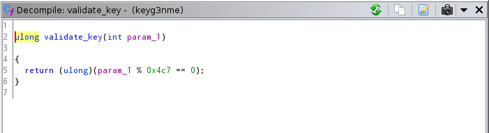

What're CrackMes ?
So they're binary files, that are meant to be cracked/hacked.
And I thought "I definitely can solve at least the easy ones" (Ｔ▽Ｔ)...But to my surprise I'm dumber than I thought, and so my journey begins...
First I go to CrackMesOne
(wich is a website for people to upload the binaries that they've made so other people can crack it)
And I search for an super easy one written in C(because I'm some what familiar with it) and compiled for Unix/Linux..., and I find this one, which at first glance seemed ok for me. Btw I was, at the same time, learning radare as a tool for reverse-engineering, because it's free and so.
Then, prepared(or not, I load the binary in radare
（πーπ）
And for my surprise, I have almost zero idea of what to do there, the first thing I think is "let me dissasseble it, so I can at least read some assembly code and try to figure it out", btw at this point it's worth noting that I had seen some of the liveoverflow Binary exploitation Series and I was reading the A journey into Radare 2, and that gave me somewhat of a "path" to follow
To the Assembly
After the first things
[notavaliduser@notavalidhostname:CrackmesOne/easy keyg3nme]$ r2 keyg3nme
Dynamic tag 12 not handled
[...]
Dynamic tag 21 not handled
-- Move the comments to the right changing their margin with asm.cmt.margin
[0x00001080]> aaa
[x] Analyze all flags starting with sym. and entry0 (aa)
[...]
[x] Use -AA or aaaa to perform additional experimental analysis.
[0x00001080]> doo
Process with PID 4260 started...
[...]
Dynamic tag 21 not handled
4260
[0x7fbcab2a0100]> s main
[0x55fb4c170165]>
I go for the 'pdf' or (print default function), wich gives me all the code that makes the 'main' function of the program.
┌ 137: int main (int argc, char argv, char **envp);
│ ; var int64t varch @ rbp-0xc
│ ; var int64t canary @ rbp-0x8
│ 0x55fb4c170165 55 push rbp
│ 0x55fb4c170166 4889e5 mov rbp, rsp
│ 0x55fb4c170169 4883ec10 sub rsp, 0x10
│ 0x55fb4c17016d 64488b042528. mov rax, qword fs:[0x28]
│ 0x55fb4c170176 488945f8 mov qword [canary], rax
│ 0x55fb4c17017a 31c0 xor eax, eax
│ 0x55fb4c17017c 488d3d850e00. lea rdi, str.Enteryourkey: ; 0x55fb4c171008 ; "Enter your key: " ; const char *format
│ 0x55fb4c170183 b800000000 mov eax, 0
│ 0x55fb4c170188 e8c3feffff call sym.imp.printf ; int printf(const char *format)
│ 0x55fb4c17018d 488d45f4 lea rax, [varch]
│ 0x55fb4c170191 4889c6 mov rsi, rax
│ 0x55fb4c170194 488d3d7f0e00. lea rdi, [0x55fb4c17101a] ; "%d" ; const char *format
│ 0x55fb4c17019b b800000000 mov eax, 0
│ 0x55fb4c1701a0 e8bbfeffff call sym.imp._isoc99scanf ; int scanf(const char *format)
│ 0x55fb4c1701a5 8b45f4 mov eax, dword [varch]
│ 0x55fb4c1701a8 89c7 mov edi, eax ; int64t arg1
│ 0x55fb4c1701aa b800000000 mov eax, 0
│ 0x55fb4c1701af e83a000000 call sym.validatekey
│ 0x55fb4c1701b4 83f801 cmp eax, 1 ; 1
│ ┌─< 0x55fb4c1701b7 750e jne 0x55fb4c1701c7
│ │ 0x55fb4c1701b9 488d3d600e00. lea rdi, str.Goodjobmatenowgokeygenme. ; 0x55fb4c171020 ; "Good job mate, now go keygen me." ; const char *s
│ │ 0x55fb4c1701c0 e86bfeffff call sym.imp.puts ; int puts(const char *s)
│ ┌──< 0x55fb4c1701c5 eb0c jmp 0x55fb4c1701d3
│ ││ ; CODE XREF from main @ 0x55fb4c1701b7
│ │└─> 0x55fb4c1701c7 488d3d730e00. lea rdi, str.nope. ; 0x55fb4c171041 ; "nope." ; const char *s
│ │ 0x55fb4c1701ce e85dfeffff call sym.imp.puts ; int puts(const char *s)
│ │ ; CODE XREF from main @ 0x55fb4c1701c5
│ └──> 0x55fb4c1701d3 b800000000 mov eax, 0
│ 0x55fb4c1701d8 488b55f8 mov rdx, qword [canary]
│ 0x55fb4c1701dc 644833142528. xor rdx, qword fs:[0x28]
│ ┌─< 0x55fb4c1701e5 7405 je 0x55fb4c1701ec
│ │ 0x55fb4c1701e7 e854feffff call sym.imp._stackchkfail ; void _stackchkfail(void)
│ │ ; CODE XREF from main @ 0x55fb4c1701e5
│ └─> 0x55fb4c1701ec c9 leave
└ 0x55fb4c1701ed c3 ret
* REMOVE LATER
And the first thing I did, was look for the function calls, and I found a very interesting one:
0x55fb4c1701af e83a000000 call sym.validate_keyI also looked for the control flow of the code and kinda got a simple understanding (I mean it's a simple program, it has 3 jumps (・・；) )
Summarizing, after running the 'sym.validate_key', it checks if the value of 'eax' is equal to '1' then calls the print "Good job mate, now go keygen me.", and closes the program, or if 'eax' is not equal to '1', then it calls another print and ends the program.
Checking the 'validate_key' function
So I go there, because if the goal is to make a keygen for the crackme, the place to look for clues is where the key is checked, right? (￣ー￣)ｂ
┌ 59: sym.validatekey (int64t arg1);
│ ; var int64t var4h @ rbp-0x4
│ ; arg int64t arg1 @ rdi
│ 0x55fb4c1701ee 55 push rbp
│ 0x55fb4c1701ef 4889e5 mov rbp, rsp
│ 0x55fb4c1701f2 897dfc mov dword [var4h], edi ; arg1
│ 0x55fb4c1701f5 8b4dfc mov ecx, dword [var4h]
│ 0x55fb4c1701f8 baad0acb1a mov edx, 0x1acb0aad
│ 0x55fb4c1701fd 89c8 mov eax, ecx
│ 0x55fb4c1701ff f7ea imul edx
│ 0x55fb4c170201 c1fa07 sar edx, 7
│ 0x55fb4c170204 89c8 mov eax, ecx
│ 0x55fb4c170206 c1f81f sar eax, 0x1f
│ 0x55fb4c170209 29c2 sub edx, eax
│ 0x55fb4c17020b 89d0 mov eax, edx
│ 0x55fb4c17020d 69c0c7040000 imul eax, eax, 0x4c7
│ 0x55fb4c170213 29c1 sub ecx, eax
│ 0x55fb4c170215 89c8 mov eax, ecx
│ 0x55fb4c170217 85c0 test eax, eax
│ ┌─< 0x55fb4c170219 7507 jne 0x55fb4c170222
│ │ 0x55fb4c17021b b801000000 mov eax, 1
│ ┌──< 0x55fb4c170220 eb05 jmp 0x55fb4c170227
│ ││ ; CODE XREF from sym.validatekey @ 0x55fb4c170219
│ │└─> 0x55fb4c170222 b800000000 mov eax, 0
│ │ ; CODE XREF from sym.validate_key @ 0x55fb4c170220
│ └──> 0x55fb4c170227 5d pop rbp
└ 0x55fb4c170228 c3 ret
In there I see some math happening, and a couple of the instructions are "signed", which from my understanding it means that they accept signed numbers, for example the imul instruction, more details here
And then?
Well, I looked to this code for a lot of time, but, even after going instruction by instruction(btw bad idea, idk, maybe I did it the wrong way or something, but it didn't worked well at all) I got confused with the way the 'signed' operations, along with the way the 'sar' instruction worked, and didn't get anywhere (￣ー￣)
So how did you solve it?
I didn't, by this time some days had passed and I was not closer to solve it, so I looked on the post of the crack me for the solution, and there I saw some people with a "C code" version of the key check, and then I thought "how did they got this?", so i remembered another tool that "creates" code(high-level code) from the assembly, Ghidra, so I open it, and I go to the function 'validate_key' and there it's, the "actual code":

Now seeing it, it starts to make sense all the signed operations, because of the cast to 'unsigned long'(ulong). But in the end it was just a check to see if the key matched '0x4c7'.
Just like so :
[notavaliduser@notavalidhostname:CrackmesOne/easy keyg3nme]$ ./keyg3nme
Enter your key: 0x4c7
Good job mate, now go keygen me.
[notavaliduser@notavalidhostname:CrackmesOne/easy keyg3nme]$
If you couldn't solve it, what is the point?
Well, I still leaned stuff, like the 'imul' and 'sar' instructions will usually be "tied" to a 'cast', also that I need to find a better way to look at the code instruction by instruction.
And that's the thing, the fun is in trying to solve it, and then if you got it, good, but if you didn't, it's also good, because you can go find some writteup and see where you were right and where you were wrong.
Tips
First it's really good to take notes/thoughts as you go, for comparison latter with a writteup.
Also don't run the binary on your "main" computer, because even though you got it from a "trust worthy" website like CrackMesOne it's still code made by someone you don't know/trust, so run it on a VM, I use Arch Linux running on Virtual Box, with just 2GB of RAM and 15GB of storage is more than enough to just run radare on a simple binary.